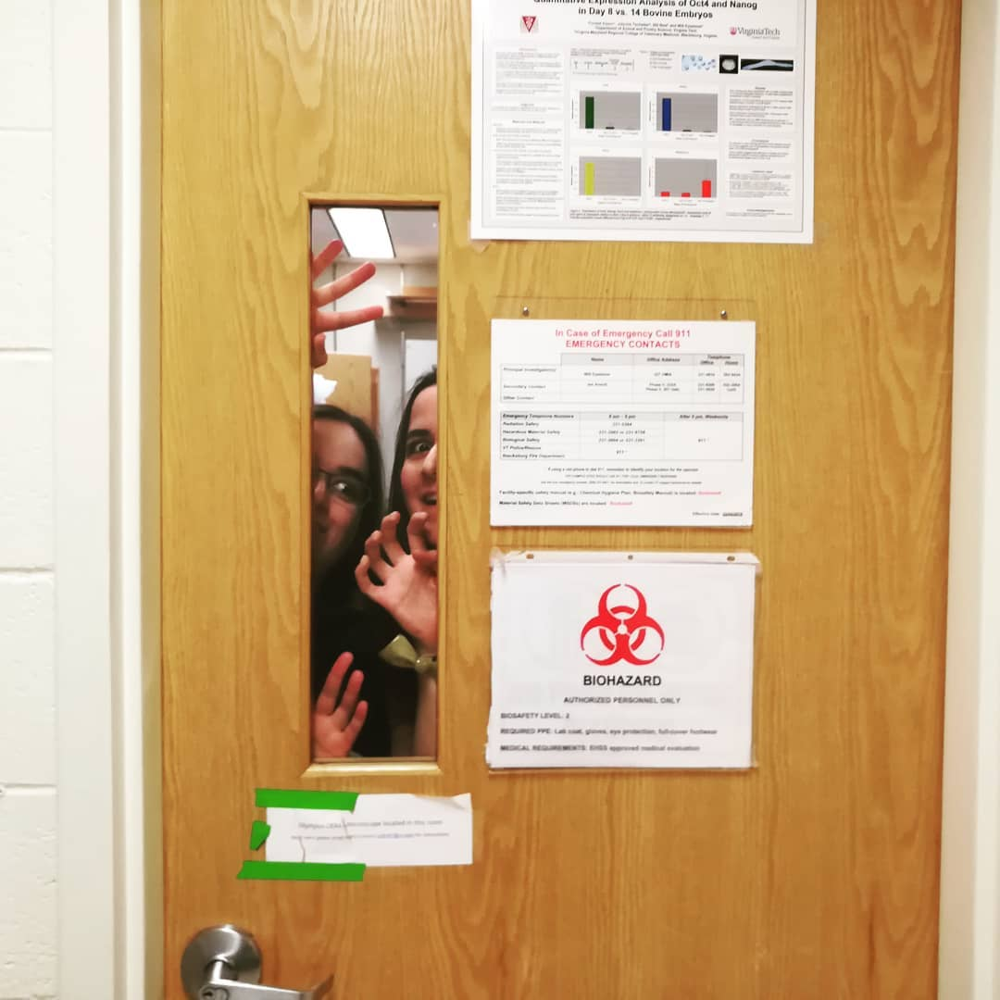

About me
My goal is to create stories that are fun to read while also exploring topics that I consider interesting or relevant. Therefore, when I work on a story, I aim to give the reader a question that is up to them to answer.
I develop my stories either as comics or in prose, depending on which format I consider best fits the idea. They're available as physical books and/or in digital format (PDF, EPUB), and most can also be read for free. Life is hard enough, so if my stories can bring a little joy into someone's life, then the goal is achieved.
